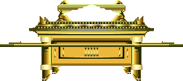

http://biblelight.net |
Golden Cherubim, A Brass Serpent
and Pictures of Your Mother.
In discussing with Catholics the practice of bowing and praying before statues or icons (pictures), almost without fail you will be presented with something like the following rationalizations:
God told Israel to make statues of cherubim (angels) and put them in the temple of God, so statues are allowed. Therefore, bowing down in front of statues must be permissible in certain circumstances, like when you pray to whom the statue represents, but not to the statue itself. Since that is what Catholics do, it is O.K. with God.
God also told Moses to make a serpent of brass for Israel. Clearly God encourages his people to make statues and images as an aid in worship, right?
You probably even have pictures of relatives in your wallet or purse, or on the dresser at home, so why can't Catholics have pictures or statues of Mary, Jesus, or Saints? We Catholics don't pray to the statues or icons, they just represent who we are praying to, just like your photos remind you of your relatives. If we Catholics are guilty of idolatry, then so is everyone with pictures of their parents etc.
An example of this type of Catholic rational is available from Catholic apologist Patrick Madrid's blog: Did you hear the one about how Catholics "worship" statues?
So, let's look at each of these in turn to see if there is any validity in the Catholic claim.
The Golden Cherubim on the Ark of the Covenant
Exo 25:1 And the LORD spake unto Moses, saying, ...
Exo 25:18 And thou shalt make two cherubims of gold, of beaten work shalt thou make them, in the two ends of the mercy seat.
Exo 25:19 And make one cherub on the one end, and the other cherub on the other end: even of the mercy seat shall ye make the cherubims on the two ends thereof.
Exo 25:20 And the cherubims shall stretch forth their wings on high, covering the mercy seat with their wings, and their faces shall look one to another; toward the mercy seat shall the faces of the cherubims be.
Exo 25:21 And thou shalt put the mercy seat above upon the ark; and in the ark thou shalt put the testimony that I shall give thee.
Exo 25:22 And there I will meet with thee, and I will commune with thee from above the mercy seat, from between the two cherubims which are upon the ark of the testimony, of all things which I will give thee in commandment unto the children of Israel.Exo 25:40 And look that thou make them after their pattern, which was showed thee in the mount.

Exo 37:7 And he made two cherubims of gold, beaten out of one piece made he them, on the two ends of the mercy seat;
Exo 37:8 One cherub on the end on this side, and another cherub on the other end on that side: out of the mercy seat made he the cherubims on the two ends thereof.
Exo 37:9 And the cherubims spread out their wings on high, and covered with their wings over the mercy seat, with their faces one to another; even to the mercy seatward were the faces of the cherubims.If you study the matter, you will find that these golden cherubim on the Ark were normally located in what was called the holy of holies, the innermost apartment of the Hebrew Sanctuary. Because they covered the lid of the Ark, known as the mercy seat, these were known as "covering cherubim". Only the Jewish high priest was ever allowed to enter this room, and then only on one day of each year, the Day of Atonement. Search the scriptures and you will find that the high priest was never instructed to bow down to these statues of cherubim or to pray to the angels in heaven that they represented.
Cherubim were also woven into the tapestries of the traveling Sanctuary of Moses:
Exo 26:1 Moreover thou shalt make the tabernacle with ten curtains of fine twined linen, and blue, and purple, and scarlet: with cherubims of cunning work shalt thou make them.
Exo 26:31 And thou shalt make a veil of blue, and purple, and scarlet, and fine twined linen of cunning work: with cherubims shall it be made:
Exo 36:8 And every wise hearted man among them that wrought the work of the tabernacle made ten curtains of fine twined linen, and blue, and purple, and scarlet: with cherubims of cunning work made he them.
Exo 36:35 And he made a veil of blue, and purple, and scarlet, and fine twined linen: with cherubims made he it of cunning work.
Again, these images of cherubim in the tapestries were never bowed down to, and prayer to angels was not permitted and never occurred before them. Angel worship is prohibited. When John the Revelator bowed down to worship an angel, the angel quickly stopped him from doing so:
Rev 22:8 And I John saw these things, and heard them. And when I had heard and seen, I fell down to worship before the feet of the angel which showed me these things.
Rev 22:9 Then saith he unto me, See thou do it not: for I am thy fellowservant, and of thy brethren the prophets, and of them which keep the sayings of this book: worship God.So, none of the images of angels in the Sanctuary involved angel worship. God's permitting these images does not mean that God sanctions bowing before and praying in front of images.
The Cherubim and Images of Solomon's Temple
In the traveling Sanctuary of Moses' day, everything that was a part of the temple had to be portable so that it could be easily carried as Israel moved through the wilderness. When Solomon built the Temple in Jerusalem, he could build things larger and more elaborate than was previously possible. The small cherubim on the Ark were overshadowed by much larger ones that Solomon had made:
1 Ki 6:21 So Solomon overlaid the house within with pure gold: and he made a partition by the chains of gold before the oracle; and he overlaid it with gold.
1 Ki 6:22 And the whole house he overlaid with gold, until he had finished all the house: also the whole altar that was by the oracle he overlaid with gold.
1 Ki 6:23 And within the oracle he made two cherubims of olive tree, each ten cubits high.
1 Ki 6:24 And five cubits was the one wing of the cherub, and five cubits the other wing of the cherub: from the uttermost part of the one wing unto the uttermost part of the other were ten cubits.
1 Ki 6:25 And the other cherub was ten cubits: both the cherubims were of one measure and one size.
1 Ki 6:26 The height of the one cherub was ten cubits, and so was it of the other cherub.
1 Ki 6:27 And he set the cherubims within the inner house: and they stretched forth the wings of the cherubims, so that the wing of the one touched the one wall, and the wing of the other cherub touched the other wall; and their wings touched one another in the midst of the house.
1 Ki 6:28 And he overlaid the cherubims with gold.
1 Ki 6:29 And he carved all the walls of the house round about with carved figures of cherubims and palm trees and open flowers, within and without.1 Chr 28:18 And for the altar of incense refined gold by weight; and gold for the pattern of the chariot of the cherubims, that spread out their wings, and covered the ark of the covenant of the LORD.
1 Chr 28:19 All this, said David, the LORD made me understand in writing by his hand upon me, even all the works of this pattern.Solomon's Temple Doors
Solomon's Temple doors also had elaborate illustrations of cherubims, palm trees and blooming flowers:
1 Ki 6:32 The two doors also were of olive tree; and he carved upon them carvings of cherubims and palm trees and open flowers, and overlaid them with gold, and spread gold upon the cherubims, and upon the palm trees.
1 Ki 6:35 And he carved thereon cherubims and palm trees and open flowers: and covered them with gold fitted upon the carved work.
Solomon's Molten Sea
Solomon's temple had a gigantic water reservoir or laver, called a molten sea, for the priests to wash themselves, and it also had sculptures of oxen at its base:
1 Ki 7:23 And he made a molten sea, ten cubits from the one brim to the other: it was round all about, and his height was five cubits: and a line of thirty cubits did compass it round about.
1 Ki 7:24 And under the brim of it round about there were knops compassing it, ten in a cubit, compassing the sea round about: the knops were cast in two rows, when it was cast.
1 Ki 7:25 It stood upon twelve oxen, three looking toward the north, and three looking toward the west, and three looking toward the south, and three looking toward the east: and the sea was set above upon them, and all their hinder parts were inward.
1 Ki 7:26 And it was an hand breadth thick, and the brim thereof was wrought like the brim of a cup, with flowers of lilies: it contained two thousand baths.2 Chr 4:2 Also he made a molten sea of ten cubits from brim to brim, round in compass, and five cubits the height thereof; and a line of thirty cubits did compass it round about.
2 Chr 4:3 And under it was the similitude of oxen, which did compass it round about: ten in a cubit, compassing the sea round about. Two rows of oxen were cast, when it was cast.
2 Chr 4:4 It stood upon twelve oxen, three looking toward the north, and three looking toward the west, and three looking toward the south, and three looking toward the east: and the sea was set above upon them, and all their hinder parts were inward.
2 Chr 4:5 And the thickness of it was an handbreadth, and the brim of it like the work of the brim of a cup, with flowers of lilies; and it received and held three thousand baths.2 Chr 4:15 One sea, and twelve oxen under it.
Solomon's Laver Bases
And there were ten basins of water for rinsing items associated with burnt sacrifices that sat on bases of brass that were richly decorated with images:
1 Ki 7:27 And he made ten bases of brass; four cubits was the length of one base, and four cubits the breadth thereof, and three cubits the height of it.
1 Ki 7:28 And the work of the bases was on this manner: they had borders, and the borders were between the ledges:
1 Ki 7:29 And on the borders that were between the ledges were lions, oxen, and cherubims: and upon the ledges there was a base above: and beneath the lions and oxen were certain additions made of thin work.2 Chr 4:14 He made also bases, and lavers made he upon the bases;
So Solomon's Temple had many carvings, images, and even statues of angels and oxen, but in no case did anyone bow down before them and pray to what they represented. Many churches use similar such decorations of angels etc., and they do not go against the Commandments of God. You cross the line though when you bow down before any image in prayer. That act of bowing down before any image in worship is what God so clearly forbids.
The Brass Serpent of Moses
Num 21:8 And the LORD said unto Moses, Make thee a fiery serpent, and set it upon a pole: and it shall come to pass, that every one that is bitten, when he looketh upon it, shall live.
Num 21:9 And Moses made a serpent of brass, and put it upon a pole, and it came to pass, that if a serpent had bitten any man, when he beheld the serpent of brass, he lived.John 3:14 And as Moses lifted up the serpent in the wilderness, even so must the Son of man be lifted up:
John 3:15 That whosoever believeth in him should not perish, but have eternal life.Note that no one was told to bow down to the brass serpent, and neither was anyone instructed to pray before it, even though the serpent on the pole represented Jesus Christ who though innocent would become sin, and be crucified for all of mankind. Looking upon the serpent brought life to those dying, just as faith in Jesus Christ will bring life to all who will believe and have faith.
Now, notice what happened when years later, the exact same serpent of brass is again mentioned in scripture:
2 Ki 18:3 And he [King Hezekiah] did that which was right in the sight of the LORD, according to all that David his father did.
2 Ki 18:4 He removed the high places, and brake the images, and cut down the groves, and brake in pieces the brazen serpent that Moses had made: for unto those days the children of Israel did burn incense to it: and he called it Nehushtan.So what prompted the King to destroy the brass serpent? Because the people had begun worshipping it as an idol, burning incense (which represents prayer to God - Psa. 141:2, Luke 1:11, Rev. 8:3-4) before it. So Hezekiah did what was right in the eyes of the Lord and destroyed it.
Golden Tumors and Golden Rats
1 Sam 6:5 Wherefore ye shall make images of your emerods, and images of your mice that mar the land; and ye shall give glory unto the God of Israel: peradventure he will lighten his hand from off you, and from off your gods, and from off your land.
1 Sam 6:8 And take the ark of the LORD, and lay it upon the cart; and put the jewels of gold, which ye return him for a trespass offering, in a coffer by the side thereof; and send it away, that it may go.
This incident will take a little explaining. Briefly, Israel had been in captivity to the Philistines for 40 years because of apostasy
(Judges 13:1), and without the counsel of God they brought the Ark of the Covenant to the battlefield (1 Sam 4:1-5) to secure their victory. Since that did not have the guidance of God to do so, Israel suffered a great defeat and lost the Ark of God to the Philistines(1 Sam 4:10-11). The Philistines took the Ark and placed it as an offering next to their god Dagon (1 Sam 5:1). The statue of Dagon was found the next morning fallen prostrate before the Ark (1 Sam 5:3). They set him back up, and the next morning not only had Dagon fallen again, but his head and hands had been severed(1 Sam 5:4) leaving nothing but a stump of stone. The Philistines were also smitten by God with a plague of cancerous tumors (emerods in the King James - 1 Sam 5:6) and a plague of mice. Wanting to rid themselves of these plagues and the Ark of God, the Philistines consulted their priests and diviners(1 Sam 6:2). The answer in part was to make representations of tumors and mice out of gold (symbolic of the plagues) and place them in a box as a trespass offering next to Ark and send them to the Israelites(1 Sam 6: 3-11) on a cart. By doing this, the plagues would be lifted from the Philistines.The tumors and mice fashioned from gold were never bowed down to, and never used as aid to prayer. They were simply proof to the Philistines that the God of Israel was the true God, and that by returning what was not theirs (the Ark) God would remove the plagues that He had imposed on them. It had been made clear to the Philistines that their god Dagon was powerless before the God of Israel and the addition of the plagues should have convinced them that their idolatry was useless and powerless, and a parallel is drawn with their situation and that of Pharaoh of Egypt (1 Sam 6:6).
Even after the Ark was returned to Israel, it remained in Kirjathjearim for twenty years, rather than at Shiloh, where it had previously been for 300 years, because of Israel's ongoing apostasy. Apparently for the twenty years it was at Kirjathjearim none of the great festival celebrations were properly observed. Samuel warned that Israel's bondage to the Philistines would end only when Israel repented of their idolatry (1 Sam 7:3).
So, now, on what basis can anyone point to the golden tumors and golden mice to justify bowing down and praying before statues and images? The whole theme of this part of scripture is to show idolatry for what it is, apostasy. Only someone totally unfamiliar with scripture would point to this section to justify bowing down and praying before statues.
Pictures of Your Mother
Exo 20:3 Thou shalt have no other gods before me.
Exo 20:4 Thou shalt not make unto thee any graven image, or any likeness of any thing that is in heaven above, or that is in the earth beneath, or that is in the water under the earth:
Exo 20:5 Thou shalt not bow down thyself to them, nor serve them: for I the LORD thy God am a jealous God, visiting the iniquity of the fathers upon the children unto the third and fourth generation of them that hate me;So, by having pictures of relatives, are you breaking the Commandments of God against graven images? Well, first, let me ask you, do you bow down before these pictures and pray to your relatives (living or dead)? If you do, then you are indeed breaking God's law. How about statues of famous men, like George Washington, etc., aren't they idolatry? No, not unless you bow down before them and pray to the person they represent. But, then you might ask, what of bowing down before a king or person of authority as a sign of respect, surely this must be idolatry too? There are many examples of people bowing to each other in the Bible, but nowhere is this practice of respect forbidden. Here is just one instance of this practice:
Gen 42:6 And Joseph was the governor over the land, and he it was that sold to all the people of the land: and Joseph's brethren came, and bowed down themselves before him with their faces to the earth.
So was this idolatry? No, it was a sign of respect for the office and authority of Joseph, and his brothers were acknowledging his authority over them and their willingness to serve him. The only exception to this may be when a King or Ruler demands to be worshipped as a god, then bowing down to him would be idolatry. However, this is exactly why bowing down to statues and images is forbidden, because by bowing down you are indicating that your are the servant of that image, and that is specifically forbidden:
Exo 20:5 Thou shalt not bow down thyself to them, nor serve them: for I the LORD thy God am a jealous God, ...
So did God permit certain images and statues? No question about it, he did indeed. However:
The golden cherubim and other images of the Hebrew Sanctuary were not used to bow down before and were never the focus of any prayer.
Moses did not have the people bow down before the brass serpent, they only needed to look at it. But many years later, when the people began to apostatize, using the brass serpent as an idol by burning incense before it, God had King Hezekiah destroy it.
The golden tumors and golden mice offered by the Philistines as a trespass offering with the Ark were symbolic of the plagues God had brought on them and were never used by Israel as a part of worship or prayer.
And finally, pictures and statues are only an idol when you bow down and pray before them in the process of worship, so pictures of relatives and statues of famous men etc. are not contrary to the law of God.
So none of the passages in scripture that we have looked at in any way justify the Catholic practice of bowing down in front of icons or statues, which God forbids as idolatry in very clear terms:
Exo 20:3 Thou shalt have no other gods before me.
Exo 20:4 Thou shalt not make unto thee any graven image, or any likeness of any thing that is in heaven above, or that is in the earth beneath, or that is in the water under the earth:
Exo 20:5 Thou shalt not bow down thyself to them, nor serve them: for I the LORD thy God am a jealous God, visiting the iniquity of the fathers upon the children unto the third and fourth generation of them that hate me;Lev 26:1 Ye shall make you no idols nor graven image, neither rear you up a standing image, neither shall ye set up any image of stone in your land, to bow down unto it: for I am the LORD your God.
Judg 2:17 And yet they would not hearken unto their judges, but they went a whoring after other gods, and bowed themselves unto them: they turned quickly out of the way which their fathers walked in, obeying the commandments of the LORD; but they did not so.
God has not completely prohibited art in all it's forms, or all images, as the Sanctuary of Moses and the Temple of Solomon demonstrate, but God has never permitted anyone to bow down in prayer before any image or statue of Himself for any reason at all. Furthermore, God has clearly prohibited bowing down before any image of any kind at all when the image represents the one to whom the prayer is directed, and there are no exceptions mentioned anywhere in Scripture. He is that jealous!
See also:
The Apocryphal Book of Baruch on Idolatry .
The Feast of Divine Mercy
Catholicism's Graven Images
|
http://biblelight.net |